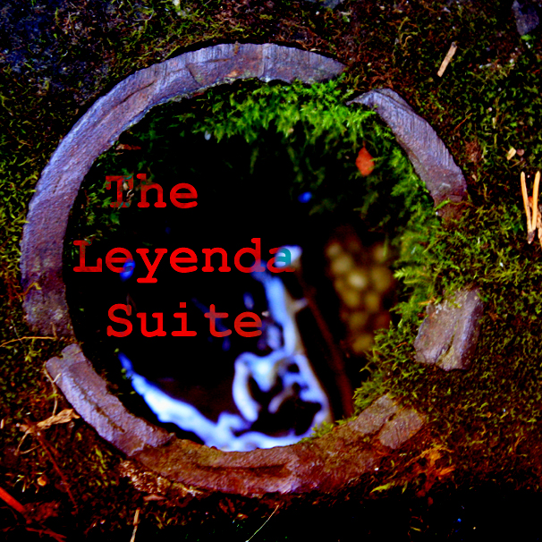

The Leyenda Suite

- 01. North Sea Leyenda (Pt. 1)
- 02. Woodland Birds Leyenda
- 03. North Sea Leyenda (Pt. 2)
The Ocean and a Few Birds, Part 1
I made a joke, once. I rambled and uttered sweet, beautiful words and said things like, "old", "drunk", "metal", and "in case you don't know, this is a Motörhead reference." I informed you, oh, my big-nosed friend, that I was on a journey. A pursuit. A grand adventure! And said, quietly, elegantly, that I'd been arrested for trying to smuggle cocaine, even though it was only amphetamines for my tight chest and numb left arm, and how that horrible experience had convinced me that I needed to escape wretched Civilization and her diabolical hatred of all things that kill lawns.
My destination was Jamaica. Where'd I'd get to ride a horse and smoke human beings and take it to head.
No one laughed. Neither did I.
But there was truth there, as there always is in my charmless delusions. The ocean has always whispered my name in the silence of mid-afternoon. The mountains, I admit, have my number. When they call, I hurry to them as quickly as my feet can pitter-patter up the hillside. But you see, I switched off the phone a long time ago, and they've never bothered me again.
Yes, I admit, once more, that the cliff is my mistress; I still think about her, and I know where she lives and I know that anytime I knock on her door, regardless of the time or day, she'll open it and her arms and embrace me in her sweet, beautiful, craggy bosom. And yes. Yes, yes, yes. I know that she tried it before, and if it isn't a spider or some sort of transportation vehicle or a knife or water or a snake (I don't know why, but I'm thinking taipan, perhaps. Or a member of the viper family) that kills me, it's going to be a slip where my fingers will scrape thin air instead of bark and my last word will be a resounding "Geronimo!!!!" before I thump and maybe even splat on a hard, Earthian floor.
Maybe my last painting will be called, "A Blade of Grass is Painted Red".
But while the mountains have had my number, and while they'll always give me that one moment of silent passion, while they'll always be my mistress waiting around the corner to grab my head and shove it between her peaky breasts and shriek impassioned scenery, the ocean will hold my head against her beating heart and softly whisper my name.
The Ocean and a Few Birds, Part 2
Eu não disse que eu não posso falar Portugues? Não, espera, eu posse falar Portugues, só, eu não posso escrever muito bem. Agora... Inglês!
Dang, I can't believe I needed a dictionary to write that; but then, I did say I couldn't write in Portuguese (twice, and in two different languages).
Anyway, Mikkey Dee is the former drummer of King Diamond, and the middle section of Leyenda constrasts greatly from the first and third parts. As such, having singing birds accompany this section (as opposed to waves) seemed fitting.
Personally, I think it's the most beautiful one of the three, the easiest to dig into and enjoy with closed eyes. Of course, there's that uneasiness (explained tomorrow... well, today, really, but since that little word up there reads "Saturday", my today will come tomorrow. Or my tomorrow will come today. Hmm... whatever. Either way, Cynic is still the greatest band. Ever. And Mr Murdoch needs to stop yearning for my soul), but the birds add to Rowland's emotional playing; you can imagine yourself sitting under the shade of a tree and strumming the guitar to the vocals of cuckoos, robins, and the rest of the choir.
Now, my über-awesome verbosity expressed in an overwhelmingly loud and fast manner...
Truthfully, I'm finding it as difficult to weave this part into my Stupid Mountain-hating diatribe as imagining Slayer performing a love ballad. So, I'll just say it uneloquently but honestly.
The singing of the birds is beautiful. The playing of the guitar is beautiful. You envisage yourself playing that soulful melody in the cool shade, while the birds tweet cheerfully at the approach of a predator. Beautiful, yes. Even the "other sounds" are beautiful.
But this isn't my favourite song. "Pt 1." isn't as pretty. For someone wanting to live in Antigua, using a sound clip of the North Sea wasn't the best way to show that (although it could say something of the "better than nothing" mentality. The North Sea isn't that bad, wind farms are cool; and I suppose, to some people, there's a certain poetry in colossal machines drilling into the Earth's face and sucking out it's wonderful pus, which will be used to power smaller machines). And "Pt. 1" could've been done better, I admit, I fucked up the volume levels.
But the sound of the guitar and the waves is all I need. That was my original vision and desire. To strum the guitar, not with screeching cocks, but lapping waves. Against the hull of my boat, which is forever docked in the western coast of Andros Island.
Take your beauty.
The Ocean and a Few Birds, Part 3
I made a joke once, I made the horrendously improper claim that I was actually willing to get on an aeroplane. Thank Zeus (because Jupiter was a plagiarist and God is sexist. The bitch.) no one believed me. Boy would that have been embarrassing. I could've been like ol' William Graham (let's see you get that reference, Bicro. Oh, damn. I just gave it up). I also made the improperly horrendous claim that I was willing to smoke cigars. Thank Ghandi (because Martin Luther King is in cahoots with God, and therefore clearly conspiring against me in some penis-choppery related way, and Bono is a piece of shit. The 5 foot 6 inches little shit. But don't be sad that I called you a little shit, Bono, you're still taller than me. See, that's better. Now, wipe off those tears, and take a dump, you'll feel right as rain before you know it!) no one was that stupid. Right?
Regardless, wanting to disappear wasn't a joke. And what better way to disappear, than to get on a boat and...
We never saw him again.
Those mountains are gorgeous, aren't they? The view from up there... ah! Orgasmic!
This isn't sarcasm. Not in the least bit. In fact, I know exactly what I'm talking about, and the view is great. But, you know, something I learnt yesterday was that a gorgeous view can sometimes be nothing more than wank fodder for the peepers. Sometimes they don't appeal to the most important organ of all: the heart.
The sound of the ocean stirs me. While those sexy mountains with their luscious peaks entice, that ocean... that sound... it calls you softly. Beckons you to stay awhile. Sit and relax. Enjoy the sound of the waves softly lapping against the hull of your boat. Play a little guitar while you're at it.
And there's my inspiration for The Leyenda Suite, the thought of playing a guitar to the beat of the waves. The desire to be there.
That very desire is also why you may have noticed something a little odd in the music. A nagging sound accompanying the ocean and birds, an unnatural whine, groan, rumble or crash (cymbal, quite literally). More than anything, this is just a message to myself, but I'll share it anyway: "Dear Young Wan, get a haircut. Also, you're not in Grenada, yet. And as long as you're listening to these Kool Waves and Bodacious Birds, I'm going to remind you of that, so you don't use this to relax (okay, you can relax a little, because that's some great guitar playing), but to understand what it is you want. Got it? Get a haircut. And maybe work out. Fix those scrawny little arms of yours. Oh, and could you please tell Rodney to shut up with consciousness? That crap about sound being aware of itself is total shite. Shite! Now, if you excuse me, I need to fix my wavelength. I think I hear a beat coming... oh, the joy! I think I'm jazz-jizzing already. Yours sincerely, Unnatural J. Sound."
I do work out, my abs are great, mostly. And why the thoughts of my music, and such pleasant, beautiful music too, are so obscene is beside me, but I understand Unnatural J. Sound's point. And listening to the songs, the waves, the guitar, the point is so perfect and perfectly clear.
Art should never be a substitution.
If you want to see what the world looks like from the top of a mountain, don't look at a picture. If you want to know what a robin sounds like, don't listen to Woodland Birds Leyenda.
Climb that mountain. Go out into the woods and prick your ears. Just as one day, I'm going to respectfully push the Leyenda Suite aside and record a set of new songs, this time without the need for Unnatural J. Sound.
THE END.
Credits
Original composition of 'Asturias (Leyenda)' by Isaac Albéniz, performed by Gordon Rowland, https://musopen.org/music/430-suite-espanola-op-47, available in the public domain.Usage of this item elsewhere
- All of the files associated with this item can be downloaded from the Internet Archive.
- If you want to support the project, this item can also be purchased from Bandcamp.
- Alternatively, it can be purchased through the musicians' cooperative jam.coop.
Supporters
- ghostwheel on Patreon
License & Attribution
By Joaquim Baeta. These sounds and the files associated with them are licensed under a Creative Commons Attribution-NonCommercial-ShareAlike 4.0 International license. You are free to distribute, remix, adapt, and build upon it in any medium or format, provided it is for noncommercial purposes, appropriate credit is given to Joaquim Baeta, you indicate if changes were made, and redistribute any derivative work under the same license.
Example attribution: "The Leyenda Suite" by Joaquim Baeta, https://scenoptica.com/sound/the-leyenda-suite.html, CC BY-NC-SA.